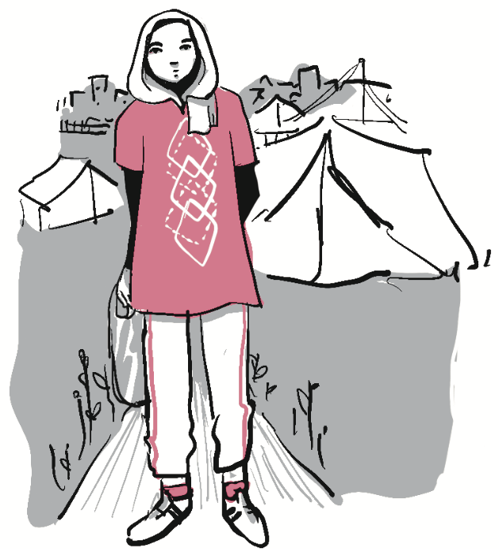

Journalism first-hand recap
For those of us watching from within the besieged Gaza Strip, the situation has been nothing less than terrifying. Shortly after the attack began, Israel declared a state of war, initiating a relentless barrage.
The sun, once a symbol of quiet evenings, seemed to sink faster with each day of uncertainty. Lives were disrupted, routines shattered, and the horizon itself felt unstable, as if pulled down into the turmoil.
As the days turned into weeks, the conflict reshaped every aspect of daily life. Families adapted to constant alarms, shelters became extensions of homes, and routines were redefined by uncertainty.
Yet in the midst of the turmoil, there were also quiet moments of resilience. Neighbors shared food and news, children still found ways to play, and communities leaned on one another to preserve a sense of normalcy.
Mohammed Mhawish
Located in Gaza City
“More than 24 hours have passed since Hamas broke out of its Gaza cage, launching an unprecedented attack that caught the Israeli army completely off guard. The infiltration of Palestinian militants across the separation fence, as well as by air and sea — already described as Israel’s most significant intelligence and military failure since the Yom Kippur War of 1973 — has resulted in the deaths of over 700 Israeli citizens from shooting attacks and rocket fire, and the kidnapping of dozens who have been brought to Gaza.
For those of us watching from within the besieged Gaza Strip, the situation has been nothing less than terrifying. Shortly after the attack began, Israel declared a state of war, initiating a relentless barrage of airstrikes targeting a wide range of locations across the strip, including hospitals, public spaces, and residential compounds. The death toll in Gaza has already surpassed 350, with thousands more wounded, and it appears inevitable that the worst is yet to come.”
* Update from 2025 – As for January 2025...
Ibtisam Mahda
Located in Gaza City
“In Gaza’s hospitals, the morgue refrigerators are overflowing with the corpses of unidentified martyrs. These include those whose bodies have been dismembered as well as those who were displaced from their usual place of residence and their identities unknown. Some hospitals have been forced to use refrigerators from ice cream trucks to store more corpses, while others are simply placing bodies they don’t have space for in tents to keep them out of the sun.”
* Update from 2025 – As for January 2025...
Mahmoud Mushtaha
Located in Gaza City
“On Jan. 26, the International Court of Justice (ICJ) issued a preliminary ruling affirming a “plausible” risk that Israel is committing genocide in the Gaza Strip. While a final ruling on the matter could take years, the Court issued six provisional measures aimed at forcing Israel to scale back its assault. The Court did not, however, opt to call for an immediate ceasefire, as many had hoped it would — not least the 2.3 million Palestinians in Gaza.”
* Update from 2025 – As for January 2025...
Closing paragraph... The situation has been nothing less than terrifying...